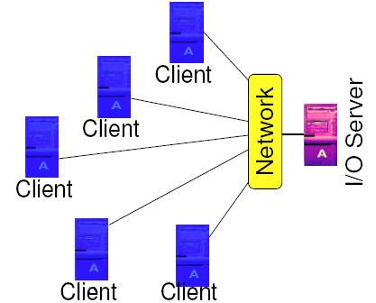
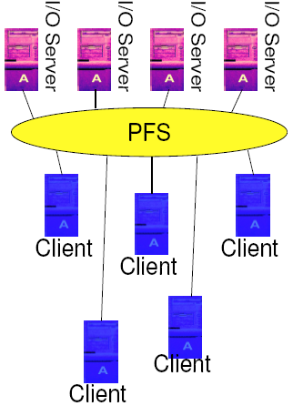
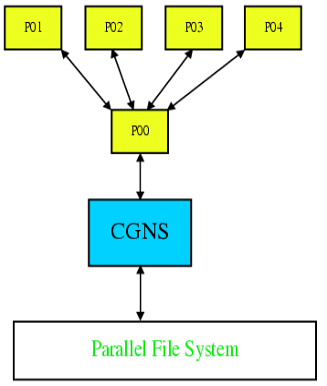
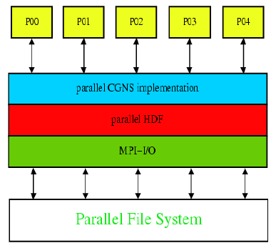
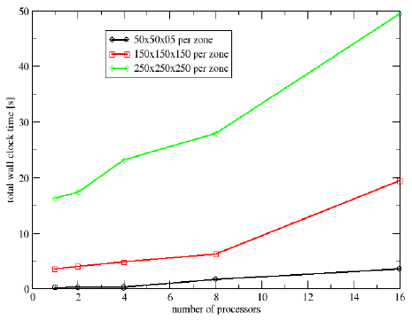
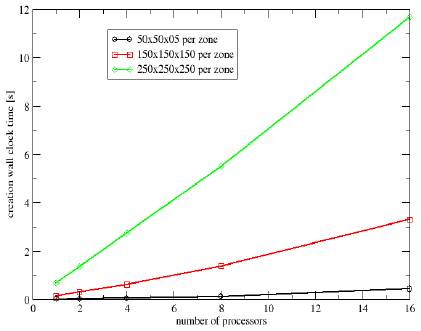
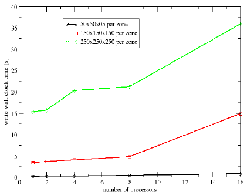

CFD General Notation System (CGNS)
Parallel I/O for the CGNS system
Thomas Hauser
thomas.hauser@usu.edu
Center for High Performance Computing
Utah State University
Outline
- Motivation
- Background of parallel I/O
- Overview of CGNS
- Data formats
- Parallel I/O strategies
- Parallel CGNS implementation
- Usage examples
Why parallel I/O
- Supercomputer
- A computer which turns a CPU-bound problem into an I/O-bound
problem.
- As computers become faster and more parallel, the (often
serialized) I/O bus can often become the bottleneck for large
computations
- Checkpoint/restart files
- Plot files
- Scratch files for out-of-core computation
I/O Needs on Parallel Computers
- High Performance
- Take advantage of parallel I/O paths (when available)
- Support for application-level tuning parameters
- Data Integrity
- Deal with hardware and power failures sanely
- Single System Image
- All nodes "see" the same file systems
- Equal access from anywhere on the machine
- Ease of Use
- Accessible in exactly the same ways as a traditional
UNIX-style file system
Distributed File Systems
- Distributed file system (DFS)
- File system stored locally on one system (the server)
- Accessible by processes on many systems (clients).
- Some examples of a DFS
- Parallel access
- Possible
- Limited by network
- Locking problem

Parallel File Systems
- A parallel file system
- multiple servers
- multiple clients
- Optimized for high performance
- Very large block sizes (=>64kB)
- Slow metadata operations
- Special APIs for direct access
- Examples of parallel file systems
- GPFS (IBM)
- PVFS2 (Clemson/ANL)

PVFS2 - Parallel Virtual File System
- Three-piece architecture
- Single metadata server
- Multiple data servers
- Multiple clients
- Multiple APIs
- PVFS library interface
- UNIX file semantics using Linux kernel driver

Simplistic parallel I/O
I/O in parallel programs without using a parallel I/O interface
- Single I/O Process
- Post-Mortem Reassembly
Not scalable for large applications
Single Process I/O
- Single process I/O.
- Global data broadcasted
- Local data distributed by message passing
- Scalability problems
- I/O bandwidth = single process bandwidth
- No parallelism in I/O
- Consumes memory and bandwidth resources

Post-Mortem Reassembly
- Each process does I/O into local files
- Reassembly necessary
- I/O scales
- Reassembly and splitting tool

Parallel CGNS I/O
- New parallel interface
- Perform I/O cooperatively or collectively
- Potential I/O optimizations for better performance
- CGNS integration

Parallel CGNS I/O API
- The same CGNS file format
- Using the HDF5 implementation
- Maintains the look and feel of the serial midlevel API
- Same syntax and semantics
- Distinguished by cgp_ prefix
- Parallel access through the parallel HDF5 interface
- Benefits from MPI-I/O
- MPI communicator added in open argument list
- MPI info used for parallel I/O management and further
optimization
MPI-IO File System Hints
- File system hints
- Describe access pattern and preferences in MPI-2 to the
underlying file system through
- (keyword,value) pairs stored in an MPI_Info object.
- File system hints can include the following
- File stripe size
- Number of I/O nodes used
- Planned access patterns
- File system specific hints
- Hints not supported by the MPI implementation or the file system
are ignored.
- Null info object (MPI_INFO_NULL) as default
Parallel I/O implementation
- Reading: no modification, except opening file
- Writing: Split into 2 phases
- Phase 1
- Creation of a data set, e.g. coordinates, solution data
- Collective operation
- Phase 2
- Writing of data into previously created data set
- Independent operation
Examples
- Reading
- Each process reads it's own zone
- Writing
- Each process writes it's own zone
- One zone is written by 4 processors
- Creation of zone
- Writing of subset into the zone
Example Reading
if (cgp_open(comm, info, fname, MODE_READ, &cgfile)) cg_error_exit();
if (cg_nbases(cgfile, &nbases)) cg_error_exit();
cgbase = 1;
if (cg_base_read(cgfile, cgbase, basename, &cdim, &pdim)) cg_error_exit();
if (cg_goto(cgfile, cgbase, "end")) cg_error_exit();
if (cg_units_read(&mu, &lu, &tu, &tempu, &au)) cg_error_exit();
if (cg_simulation_type_read(cgfile, cgbase, &simType)) cg_error_exit();
if (cg_nzones(cgfile, cgbase, &nzones)) cg_error_exit();
nstart[0] = 1; nstart[1] = 1; nstart[2] = 1;
nend[0] = SIDES; nend[1] = SIDES; nend[2] = SIDES;
for(nz=1; nz <= nzones; nz++) {
if (cg_zone_read(cgfile, cgbase, nz, zname, zsize)) cg_error_exit
if (mpi_rank == nz-1) {
if (cg_ncoords(cgfile, cgbase, nz, &ngrids)) cg_error_exit();
if (cg_coord_read(cgfile, cgbase, nz, "CoordinateX", RealDouble,
nstart, nend, coord)) cg_error_exit();
}
}
Each Process writes one Zone - 1
if (cgp_open(comm, info, fname, MODE_WRITE, &cgfile) ||
cg_base_write(cgfile, "Base", 3, 3, &cgbase) ||
cg_goto(cgfile, cgbase, "end") ||
cg_simulation_type_write(cgfile, cgbase, NonTimeAccurate)) cg_error_exit();
for(nz=0; nz < nzones; nz++) {
if (cg_zone_write(cgfile, cgbase, name, size, Structured, &cgzone[nz][0]))
cg_error_exit();
if (cgp_coord_create(cgfile, cgbase, cgzone[nz][0], RealDouble, "CoordinateX",
&cgzone[nz][1])) cg_error_exit();
}
Each Process writes one Zone - 2
for(nz=0; nz < nzones; nz++) {
if (mpi_rank == nz) {
if (cgp_coord_write(cgfile, cgbase, cgzone[mpi_rank][0], cgzone[mpi_rank][1],
coord) ||
cgp_coord_write(cgfile, cgbase, cgzone[mpi_rank][0], cgzone[mpi_rank][2],
coord) ||
cgp_coord_write(cgfile, cgbase, cgzone[mpi_rank][0], cgzone[mpi_rank][3],
coord)) cg_error_exit();
}
}
Writing One Zone
/* size is the total size of the zone */
if (cg_zone_write(cgfile, cgbase, name, size, Structured, &cgzone[nz][0])) cg_error_exit();
if (cgp_coord_create(cgfile, cgbase, cgzone[nz][0], RealDouble, "CoordinateX",
&cgzone[nz][1]) ||
cgp_coord_create(cgfile, cgbase, cgzone[nz][0], RealDouble, "CoordinateY",
&cgzone[nz][2]) ||
cgp_coord_create(cgfile, cgbase, cgzone[nz][0], RealDouble, "CoordinateZ",
&cgzone[nz][3])) cg_error_exit();
if (cgp_coord_partial_write(cgfile, cgbase, cgzone, cgcoord, rmin, rmax, coord))
cg_error_exit;
Write Performance
- 3 Cases
- 50×50×50 points × number of processors
- 150×150×150 points × number of processors
- 250×250×250 points × number of processors
- Increasing the problem size with the number of processors
Total write time - NFS

Total write time - PVFS2

Creation time - PVFS2

Write time - PVFS2

Conclusion
- Implemented a prototype of parallel I/O within the framework of CGNS
- Built on top of existing HDF5 interface
- Small addition to the midlevel library cgp_* functions
- High-performance I/O possible with few changes
- Splitting the I/O into two phases
- Creation of data sets
- Writing of data independently into the previously created
data set
- Testing on more platforms